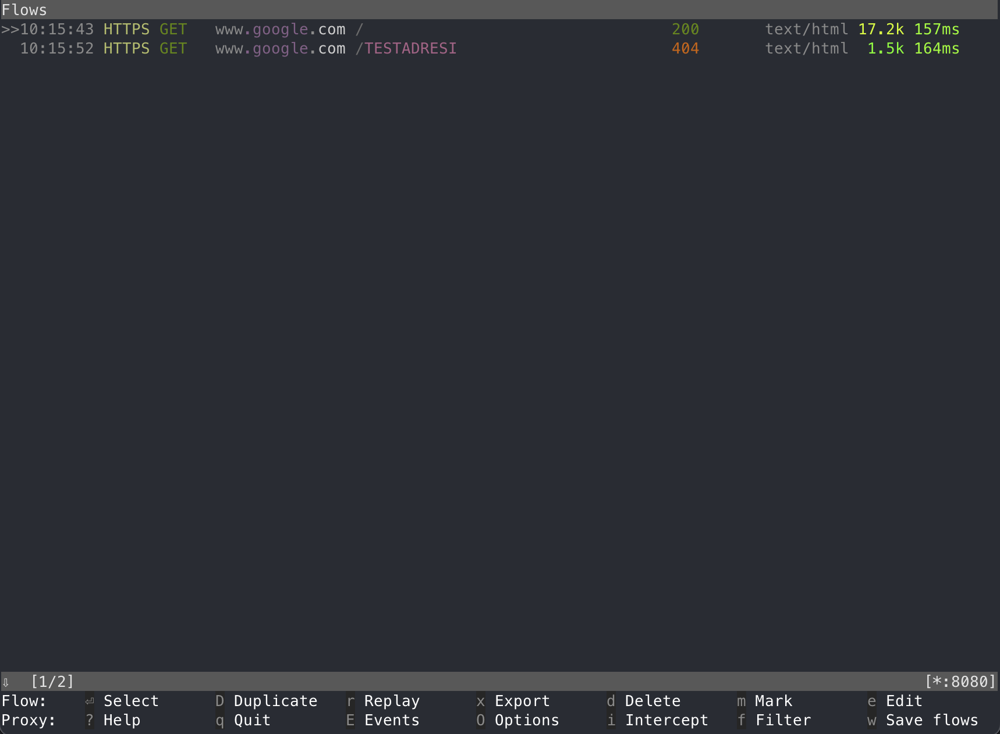
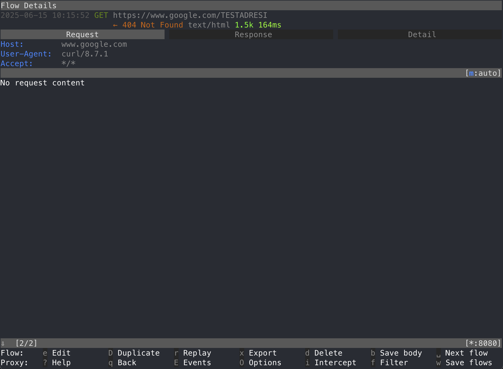

Mitmproxy ile Hata Ayıklama
Üçüncü parti servisleri sıklıkla kullanıyoruz. Kendi geliştirdiğimiz bir uygulama üzerinde çalışıyorsak bu üçüncü parti servislere atılan isteklerin ve alınan cevapların görülmesi çok kolay. Basit bir şekilde log üreterek servisin doğru çalışıp çalışmadığını anlayabiliyoruz. Peki üzerinde çalıştığımız sistem başka birileri tarafından yazılmışsa ve bu sistemden atılan isteklerin / alınan cevapların neler olduğunu görmek istiyorsak nasıl bir yol izleyeceğiz? Öyle ki buradaki sistem servise atılan istekleri loglamıyorsa isteklerin doğru atılıp atılmadığını, alınan cevabın istenilen şekilde olup olmadığını nasıl görebiliriz?
Burada mitmproxy devreye giriyor. Özetle üçüncü parti servisin adresi yerine kendi sunucumuzun
adresini yazacağız, sunucumuz kendisine gelen istekleri olduğu gibi üçüncü parti servise aktaracak
ve biz de gelen / giden trafiği rahat bir şekilde görebileceğiz.
Yaşanmış bir örnek verecek olursam partner tarafından geliştirilen e-ticaret sistemine üye olan
kullanıcılar için SMS onayı ihtiyacından dolayı SMS firmasının ayarlarını yaptık ancak üyelik
aşamasında SMS gelmediğini gördük. Burada partnerin verebileceği bir log maalesef bulunmadığından
mitmproxy aracılığı ile SMS firması ayarlarına kendi adresimizi yazarak hangi isteklerin atıldığnı
ve problemin ne olduğunu doğru bir şekilde tespit edebildik.
İhtiyaçlar¶
İhtiyaçlarımız oldukça basit. Bu iş için bir alan adında dışarıdan gelen isteklere cevap veren bir
web sunucusu ile mitmproxy uygulamasının olması yeterli.
- Alan adı
- Ubuntu sunucu
- Caddy web sunucusu
- Screen
- Mitmproxy
Alan Adı¶
Teoride alan adına sahip olmadan, salt IP adresi ile HTTP üzerinden bunu başarabilecek olsak da isteklerimizin HTTPS üzerinden güvenli bir şekilde gönderilebilmesi için alan adına ihtiyaç duyuyoruz. Üçüncü parti servisler yüksek ihtimalle HTTPS üzerinden çalıştığı için ve üzerinde söz sahibi olamadığımız sistemlerin güvenli bağlantı kurmasından dolayı bunu tercih ediyoruz. Alan adı veya güvenli bağlantı olmadan çalışacaklarından emin olamadığımız için üçüncü parti servis HTTPS kullanıyorsa, bizim de bunu aynı şekilde sunabilmemiz mantıklı olacaktır.
Başlamadan önce şirketinizin alan adında veya başka bir alan adı altında kayıt oluşturabildiğinizden
ve bunun mitmproxy kurulumu yapacağımız sunucuya yönlendirildiğinden emin olun.
Ubuntu Sunucu ve Gerekli Paketler¶
En son LTS sürümü olan 24.04 kullanabilirsiniz. Ubuntu sunucu olması şart olmamakla birlikte
kullanacağınız sürümün de bir önemi yok. Elinizde halihazırda bir sunucu varsa bunu da
değerlendirebilirsiniz. Sadece sunucuya Caddy ve mitmproxy kurabildiğinizden emin olun.
Caddy web sunucusu kurulumu için resmi belgelerden ilerleyebilirsiniz. Nginx yerine Caddy kullanmamızın temel sebebi Let's Encrypt sertifikalarını ekstra bir efor sarf etmeden oluşturması.
Buna ek olarak aşağıdaki komut ile mitmproxy kurulumunu gerçekleştirebilirsiniz.
Screen¶
SSH oturumumuz sonlansa bile süreçlerin devam etmesi için kullanacağımız terminal çoklayıcısı.
mitmproxy sürecini screen altında çalıştıracağız ve böylelikle SSH oturumunuzu kapatsanız bile
arka planda çalışmaya devam edecek.
Screen Ayarları¶
Screen kullanmaya başlamadan önce kullanımı kolaylaştıracak birkaç ayar ile başlayalım. Aşağıdaki
ayarları ~/.screenrc içerisine kopyalayın. Buradaki ayarlar temelde bize hangi sekmede olduğumuz
bilgisini verecek. Geri kalan ayarlar İngilizce halleri ile açıklanmış durumda.
# Disable startup message
startup_message off
# Show status bar at bottom
hardstatus alwayslastline
hardstatus string '%{= kG}[ %{G}%H %{g}][%= %{= kw}%?%-Lw%?%{r}(%{W}%n*%f%t%?(%u)%?%{r})%{w}%?%+Lw%?%?%= %{g}][%{B} %m-%d %{W}%c %{g}]'
# Start numbering windows from 1
bind c screen 1
bind ^c screen 1
bind 0 select 10
screen 1
# Enable mouse scrolling and scroll bar history scrolling
termcapinfo xterm* ti@:te@
# Set large scrollback buffer
defscrollback 10000
# Don't display the copyright page
startup_message off
# Tab-completion flashes in heading bar
vbell off
# Automatically detach on hangup
autodetach on
# Change escape sequence to Ctrl+A
escape ^Aa
Screen Kullanımı¶
Temelde yapacağımız şey bir screen oturumu başlatmak ve bu oturum içerisinde komutlarımızı girerek
ilgili süreçleri devam ettirmek. Daha önce screen kullanmamış olanlar için minik bir giriş yapalım.
Bu komut oturumismi adıyla yeni bir screen oturumu başlatır. Terminalinizin alt kısmında fark
edeceğiniz üzere açılışta sadece 1 adet sekme bulunmaktadır. Aynı komutu tekrarlayarak birden fazla
screen oturumu açılabilir ancak yeni oturum başlatmadan önce var olan oturumdan ayrılmak (detach)
gerekmektedir.
Bunun için Ctrl-a d tuş kombinasyonları kullanılır. Yani Ctrl ve a tuşlarına aynı anda basılır
ve çekilir. Sonrasında sadece d tuşuna basılır. Buradaki Ctrl-a tuş kombinasyonu kaçış dizisi
(escape sequence) olarak adlandırılır. Bir üstteki screen ayarları bölümünün sonunda bunu Ctrl-a
olarak ayarladığımızı görebilirsiniz.
MacOS kullanıcıları
MacOS kullananlar Ctrl tuşu için Control^ tuşunu kullanmalı. Yani burada Ctrl-a kaçış
dizisi görüldüğünde Mac üzerinde Control-a tuşlarına basılmalı.
Screen oturumundan ayrıldıktan sonra ekranınızdaki her şeyin oturum öncesi konsol çıktısına dönmesi gerekiyor. Tekrar oturuma devam etmek için aşağıdaki komutu kullanın.
Burada var olan oturumları screen -list komutu ile de görebilirsiniz. Screen ile çalışırken
normalde -S ve -r ile belirttiğimiz oturum isimleri zorunlu değil ancak oturum ismi verilmezse
screen otomatik olarak pid numarasını oturum ismi olarak kullanıyor ve birden fazla oturum açınca
hangi oturumun ne olduğu anlaşılamayabiliyor. Bu açıdan her daim oturum ismi ile çalışmak
oturumların ne olduğunu daha anlaşılabilir kılıyor.
Oturumdan ayrılma ve tekrar dahil olma pratiğini yaptıktan sonra aşağıdaki kombinasyonlarla screen oturumunuzu yönetilebilir hale getirebilirsiniz.
Ctrl-a c: yeni bir sekme oluşturur (create)Ctrl-a n: bir sonraki sekmeye geçer (next)Ctrl-a p: bir önceki sekmeye geçer (previous)Ctrl-a A: sekme ismini değiştirir
Mitmdump¶
Yazının başında bahsettiğim gibi burada yapmamız gereken bize gelen istekleri olduğu gibi üçüncü
parti servise aktarmak. Bunun için de mitmdump kullanacağız ve ana olarak aşağıdaki komutu
çalıştıracağız. Bu komut belirttiğimiz porta gelen istekleri (5000), yine belirttiğimiz sunucuya
aktaracak (api.servis.com) ve istekleri bir dosyaya (servis.flow) yazacak. Bu komutu yeni bir
screen oturumu içerisinde çalıştırın.
Artık proxymiz hazır. 5000. port üzerinde aktif ve gelen / giden bütün istekler flow dosyasına
yazılıyor. Devamında yapacağımız aksiyon bu flow dosyasını mitmproxy ile okuyarak istekleri görmek
ancak bunun öncesinde bu proxy sunucumuzu dışarıya açmamız gerekmekte. Bunun için de Caddy
kullanacağız.
Caddy¶
Burada bir alan adına ihtiyaç olacağını söylemiştim. Alan adınızı proxy sunucusuna yönlendirdikten
sonra Caddy ayarlarını yapmamız gerekmekte. Örnek olması açısından burada proxy.sirketismi.com
alan adını kullanacağız.
/etc/caddy/Caddyfile dosyasını açın ve aşağıdaki satırları girin.
Sonrasında service caddy reload komutu ile sunucuyu yenileyin.
Bu ayar bize SSL sertifikalı bir şekilde 5000. portta oluşturduğumuz mitm sürecini kullanmamıza olanak sağlayacak.
Mitmproxy ve Kullanım¶
Artık tek yapmamız gereken üçüncü parti servis adresininin bulunduğu yerlere proxy.sirketismi.com
yazmak. İstekler sunucumuza gelmeye başladığında bunlar mitmdump aracılığı ile servis.flow
dosyasına kaydolacak. Bu dosyayı mitmproxy yardımı ile okuyacağız. Ctrl-a c ile yeni bir screen
sekmesi açın ve aşağıdaki komutu girin.
Burada bizi aşağıdaki gibi bir arayüz karşılayacak.

Bu arayüzde var olan flowların hepsini görebiliyoruz. Yön tuşları ile detayını görmek istediğiniz flow'u seçip enter tuşuna basarak bunu görebilirsiniz. Sonrasında ESC tuşu ile tekrar flow listesine dönebilirsiniz. Örnek olması açısından 404 alınan flowu seçtim ve beni aşağıdaki ekran karşıladı.

Burada yine yön tuşları ile sağa ve sola giderek istek / dönüş / detay bilgilerini görebilirsiniz.
Flow dosyası ve yenileme
Mitmproxy okuduğumuz bu flow dosyasının o an var olan içeriğini gösterir. Sonrasında bir istek gelmişse gelen bu yeni istekler yenilenmez veya gösterilmez. Bunun için mitmproxy'den çıkıp tekrar aynı komut ile dosyayı okumamız gerekmekte.
Sonuç¶
Kontrolümüzün olmadığı sistemler tarafından üçüncü parti servislere ne tür bir istek atıldığını daha
kolay görebilmek için mitmproxy çok faydalı bir araç, hayat kurtarıcı diyebilirim. SMS OTP
örneğinde partner sisteminden isteklerin atıldığını ancak geri dönüşte hata alındığını bu yolla
görebildik. Alınan hata tam anlamıyla karşımıza çıktığı için ve partner sistemi de bu isteği aldığı
için problemi nokta atışı tespit edebildik. Umarım bu araç sizlerin de işinize yarayacaktır.